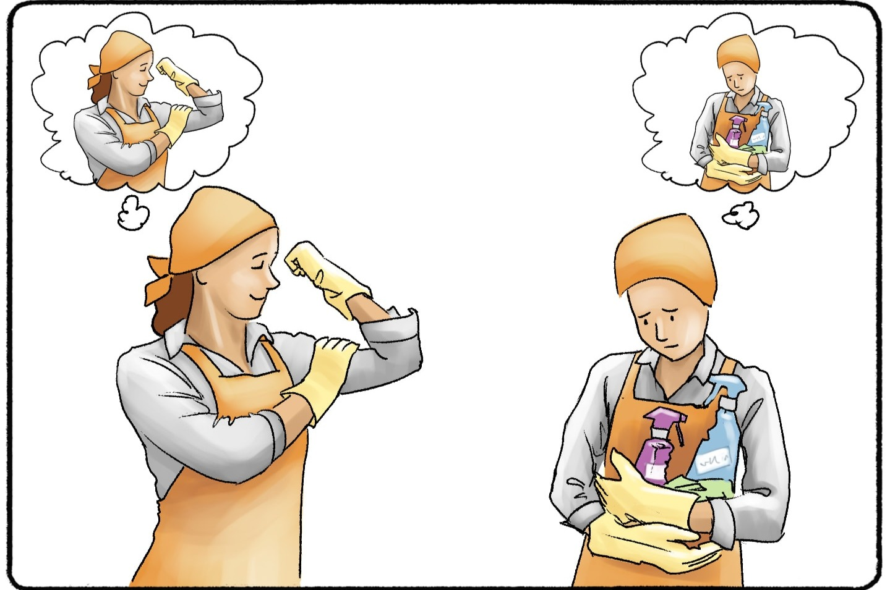

Niềm tin có thể thay đổi thực tại

Niềm tin không chỉ là một trạng thái tinh thần — nó có thể tạo ra những thay đổi có thể đo lường được trong cảm nhận, hành vi và cuối cùng là kết quả thực tế.
1. Từ sinh lý: Hiệu ứng placebo
Hiệu ứng placebo (placebo effect) là hiện tượng một người cảm nhận sự cải thiện về triệu chứng hoặc sức khỏe dù họ chỉ nhận một phương pháp điều trị không có tác dụng dược lý thực sự (ví dụ: viên thuốc giả, nước muối, hoặc can thiệp “giả”).
Bản chất cốt lõi
Không phải “thuốc” tạo ra hiệu quả, mà chính là:
◦ Niềm tin của người bệnh rằng mình đang được điều trị
◦ Kỳ vọng tích cực về kết quả
◦ Tác động tâm lý – thần kinh lên cơ thể (não có thể giải phóng endorphin, dopamine…)
Cơ chế
◦ Conditioning (điều kiện hóa): cơ thể học rằng “uống thuốc = sẽ đỡ”
◦ Expectation (kỳ vọng): tin rằng sẽ tốt lên → não điều chỉnh cảm nhận và phản ứng
◦ Tương tác xã hội: lời nói, thái độ của bác sĩ, môi trường điều trị
Ứng dụng
◦ Là nhóm đối chứng bắt buộc trong clinical trials
◦ Được tận dụng trong quản lý đau, trị liệu tâm lý, stress
→ Ở mức này, niềm tin đã có thể tác động trực tiếp lên cơ thể.
2. Sang hành vi: Niềm tin định hình quyết định
Đi xa hơn placebo, niềm tin không chỉ thay đổi cảm nhận — nó thay đổi cách con người hành động.
Trong behavioral economics và tâm lý học, có nhiều cơ chế giải thích:
Self-fulfilling prophecy (lời tiên tri tự ứng nghiệm)
◦ Tin rằng mình sẽ thất bại → giảm nỗ lực → kết quả kém → củng cố niềm tin ban đầu
◦ Ngược lại, tin rằng mình có thể thành công → hành động kiên trì hơn → xác suất thành công tăng
Expectancy theory (kỳ vọng – động lực)
◦ Khi tin rằng nỗ lực có ý nghĩa, con người sẽ đầu tư nhiều hơn vào hành động
Loss aversion & framing
◦ Cách bạn “tin” về rủi ro sẽ ảnh hưởng trực tiếp đến quyết định tài chính
→ Niềm tin lúc này trở thành input của hệ thống ra quyết định.
3. Tích lũy dài hạn: Từ hành vi → số phận
Niềm tin không thay đổi thực tại ngay lập tức, nhưng nó:
thay đổi hành vi lặp lại → tạo ra kết quả tích lũy → hình thành “thực tại mới”
Ví dụ:
◦ Người tin rằng “mình không giỏi tài chính” → né tránh đầu tư → bỏ lỡ cơ hội tăng trưởng tài sản
◦ Người tin rằng “học được kỹ năng mới là có thể tăng thu nhập” → học liên tục → cải thiện sự nghiệp
Trong dài hạn:
◦ Khác biệt nhỏ trong hành vi → tác động cộng dồn (compounding effect)
◦ Dẫn đến chênh lệch lớn về thu nhập, sức khỏe, vị thế xã hội
→ Đây chính là cách niềm tin “tái cấu trúc thực tại” thông qua thời gian.
4. Kết luận
Niềm tin không phải là “phép màu” trực tiếp thay đổi thế giới vật lý. Nhưng nó hoạt động qua 3 tầng rõ ràng:
1. Sinh lý: thay đổi cảm nhận (placebo)
2. Hành vi: thay đổi quyết định (behavioral economics)
3. Tích lũy: thay đổi kết quả dài hạn (compounding outcomes)
Vì vậy:
Niềm tin không trực tiếp thay đổi thực tại —
nhưng nó thay đổi con người hành động như thế nào,
và chính hành động đó tạo ra thực tại.